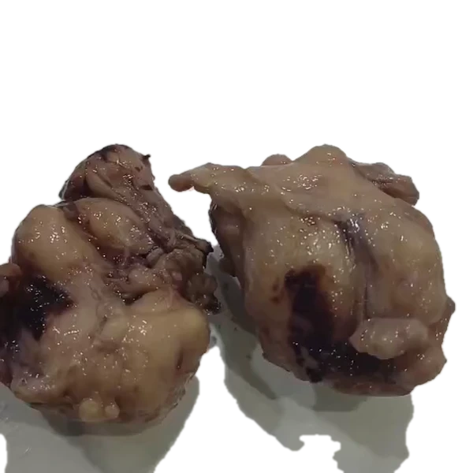

PIN 1 • Ápex
Margen R0 Libre (> 3.2 mm)
PIN 2 • Nódulo
Gleason 4+4=8 (ISUP 4)
PIN 3 • Cuello
Margen Basal Libre R0
PIN 4 • Nervios
Invasión PNI Negativa
PIN HISTOLÓGICO
Casete B-02
Veredicto Oncológico
Detalles patológicos del margen con tinta china.
Despacho en Segundos
El cirujano recibe el informe directamente en su móvil antes de que el paciente abandone la sala de recuperación.
PDF de Ultra-Resolución
Microfotografías calibradas a 40x, márgenes documentados y firma médica oficial con validez médico-legal.
Notificaciones de Despacho
3 nuevasPortal Quirúrgico Conectado
Activo 24/7Visor 360° en Bolsillo
Acceso instantáneo a la fotografía de tallado macroscópico con los márgenes entintados en alta fidelidad.
Trazabilidad 26Q-...
Código de barras bidimensional que previene extravíos o confusiones de muestras entre sedes.
Verificador Instantáneo de Stock
Escribe el anticuerpo (Ej: HER2, SOX-10, Ki-67, AMACR, p63):
| Anticuerpo | Linaje | Localización | Utilidad Diagnóstica Oficial | Tiempo |
|---|
Tarifas Preferenciales para Clínicas & Cirujanos
| Procedimiento Quirúrgico | Tiempo | Tarifa Preferencial |
|---|---|---|
|
Morcelados Prostáticos / RTU HoLEP, ThuLEP, Bipolar |
48 - 72 hrs | S/ 70.00 |
|
Prostatectomía Radical Oncológica Abierta, Laparoscópica, Robótica |
4 - 5 días | S/ 140.00 |
|
Piezas Quirúrgicas Menores Fimosis, Quistes, Lesiones de Piel |
48 hrs | S/ 60.00 |
|
Biopsias Endoscópicas Vejiga, Uréter, Gástricas |
48 hrs | S/ 60.00 |
|
Biopsia de Próstata por Punción Tru-Cut sistemática o por fusión |
72 hrs | S/ 120.00 |
Simulador de Convenio Institucional
Ajusta el volumen estimado de tu centro quirúrgico: